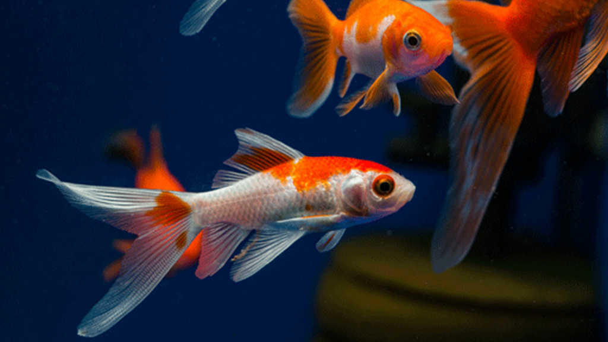

Ikan Komet
Ikan komet hampir mirip dengan ikan mas dan ikan mas koki. Jenis ikan hias ini kerap disebut ikan slayer karena bentuk sirip dan ekor ikan ini seperti slayer. Ikan komet juga memiliki warna yang sangat cantik.
Ikan komet yang memiliki nama latin Carrassius Auratus. Memiliki tubuh yang ramping dengan warna perak mengkilap putih dan merah cerah serta ekor panjang yang melambai saat berenang membuat para pecinta ikan hias memburu ikan ini. Untuk harganya, ikan komet biasanya dijual dengan harga Rp 5.000 hingga Rp 60.000 per ekor.
Perawatan
Pertama, yang harus kamu perhatikan adalah ukuran akuarium. Pilih ukuran akuarium yang tepat agar ikan merasa nyaman berada di dalamnya. Sesuaikan pula ukuran akuarium dengan jumlah ikan yang ingin diletakan. Jangan terlalu banyak karena akan mempersempit ruang gerak ikan. Selain itu, jika ikan terlalu bertumpuk, kita tidak akan bisa melihat siripnya saat ikan berenang. Jangan lupa untuk meletakan filter agar air di dalam akuarium tetap terjaga kebersihannya. Tambahkan pula bebatuan dan pasir di dasar akuarium sebagai dekorasi yang mempercantik akuarium.
Setelah akuarium siap, akan lebih baik jika kita tidak terburu-buru untuk meletakan ikan di dalamnya. Isi akuarium setengah dengan air dan endapkan selama semalam. Jika sudah, keesokan harinya, isi air kembali hingga penuh atau sesuai dengan komposisi yang pas dari tinggi akuarium. Pastikan untuk menggunakan air yang bebas dari bahan kimia. Sebab, air yang bebas bahan kimia akan sangat jernih. Sehingga, kita bisa melihat kepakan sirip ikan saat berenang.
Selanjutnya, masukan ikan ke dalam akuarium yang sudah siap. Namun, jangan asal langsung memasukan ikan, ya, Bela. Masukan ikan dan plastiknya ke dalam akuarium selama 15 menit agar bisa beradaptasi. Kemudian, buka plastik dan masukan ikan dengan air di dalam plastik ke dalam akuarium. Dengan begini, ikan akan cepat beradaptasi dengan air akuarium dan tidak stres.
Ikan cukup diberi makan dua hingga tiga kali sehari. Kamu bisa memberikan remah roti tawar, jentik nyamuk, atau bahkan pelet yang mudah ditemukan di berbagai toko hewan peliharaan. Ingat untuk selalu memberikan makan jika makanan yang kamu beri sebelumnya sudah habis. Sebab, jika masih ada sisa makanan di dalam akuarium dan kamu memberikannya makanan baru, ikan tidak akan memakan makanan sisa tersebut. Sisa makanan itu akan membuat air akuarium keruh. Jangan lupa pula untuk mengganti air akuarium seminggu sekali. Bersihkan juga filter air agar air akuarium selalu jernih. Air yang jernih akan membuat ikan sehat dan bebas stres.
Reproduksi
Secara alami, pemijahan terjadi pada tengah malam sampai akhir fajar. Menjelang memijah, induk-induk ikan mas aktif mencari tempat yang rimbun, seperti tanaman air atau rerumputan yang menutupi permukaan air. Substrat inilah yang nantinya akan digunakan sebagai tempat menempel telur sekaligus membantu perangsangan ketika terjadi pemijahan. (Gursina, 2008). Sifat telur ikan Komet adalah menempel pada substrat. Telur ikan Komet berbentuk bulat, berwarna bening, berdiameter 1,5-1,8 mm, dan berbobot 0,17-0,20 mg. Ukuran telur bervariasi, tergantung dari umur dan ukuran atau bobot induk. Embrio akan tumbuh di dalam telur yang telah dibuahi oleh spermatozoa. Antara 2-3 hari kemudian, telur-telur akan menetas dan tumbuh menjadi larva. Larva ikan Komet mempunyai kantong kuning telur yang berukuran relatif besar sebagai cadangan makanan bagi larva. Kantong kuning telur tersebut akan habis dalam waktu 2-4 hari.
Larva ikan Komet bersifat menempel dan bergerak vertikal. Ukuran larva antara 0,50,6 mm dan bobotnya antara 18-20 mg. Larva berubah menjadi kebul (larva stadia akhir) dalam waktu 4-5 hari. Pada stadia kebul ini, ikan Komet memerlukan pasokan makanan dari luar untuk menunjang kehidupannya. Pakan alami kebul terutama berasal dari zooplankton, seperti rotifera, moina, dan daphnia. Kebutuhan pakan alami untuk kebul dalam satu hari sekitar 60-70% dari bobotnya. Setelah 2-3 minggu, kebul tumbuh menjadi burayak yang berukuran 1-3 cm dan bobotnya 0,1-0,5 gram. Antara 2-3 minggu kemudian burayak tumbuh menjadi putihan (benih yang siap untuk didederkan) yang berukuran 3-5 cm dan bobotnya 0,5-2,5 gram. Putihan tersebut akan tumbuh terus. Setelah tiga bulan berubah menjadi gelondongan yang bobot per ekornya sekitar 100 gram.